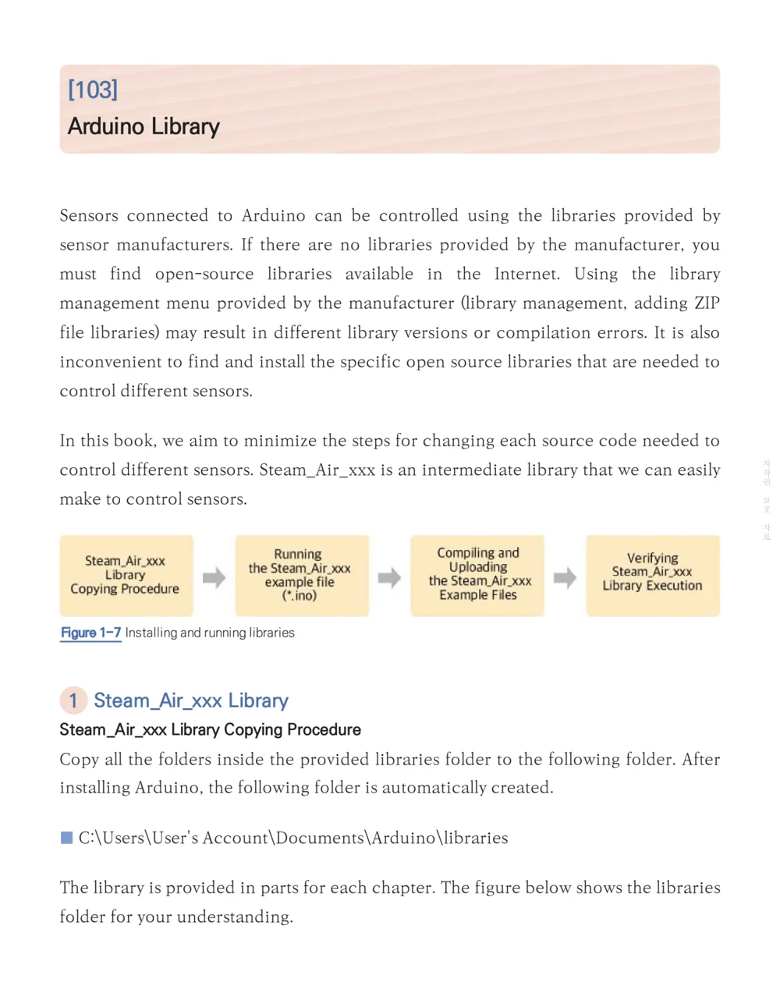
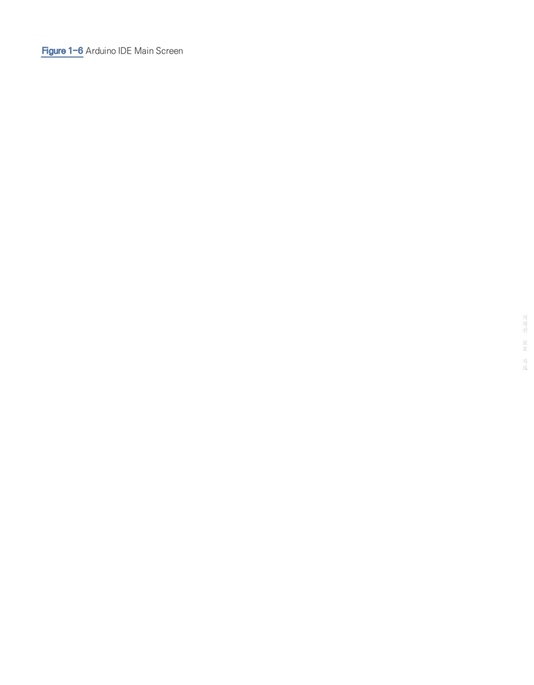
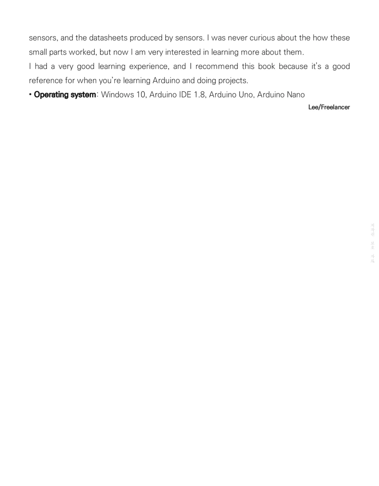
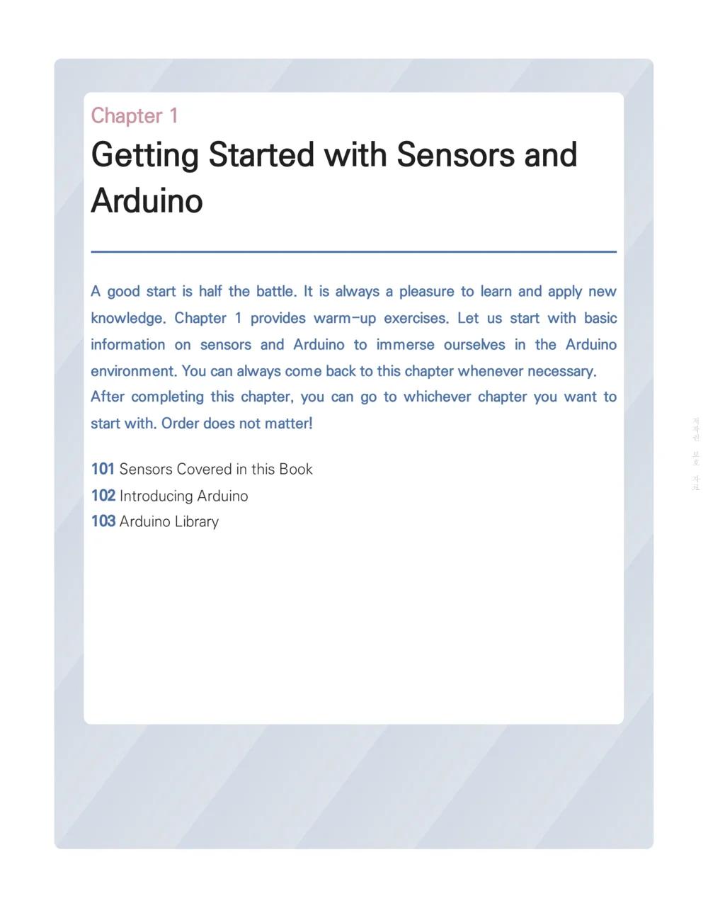
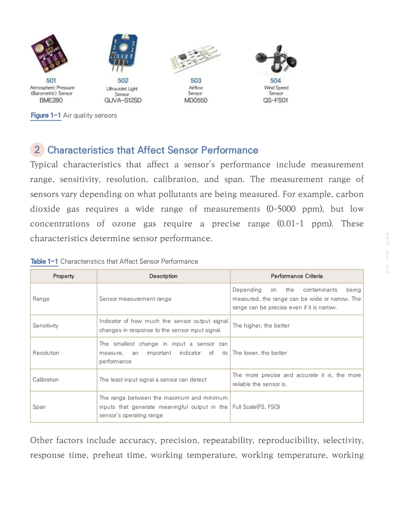

Sample Pages
These sample images show the English edition's cover, chapter organization, sensor overview, Arduino setup, installation screens, library workflow, and beta tester comments.
Cover and Book Organization


Inside Preview




What the sample shows
The book introduces the measurement target first, then explains sensor characteristics, wiring, software coding, and test confirmation. This structure helps readers move from understanding a sensor to using it in a working Arduino project.
The final chapter extends the basic measurement workflow into practical monitoring projects using LCD, Bluetooth, Wi-Fi, and RF communication.